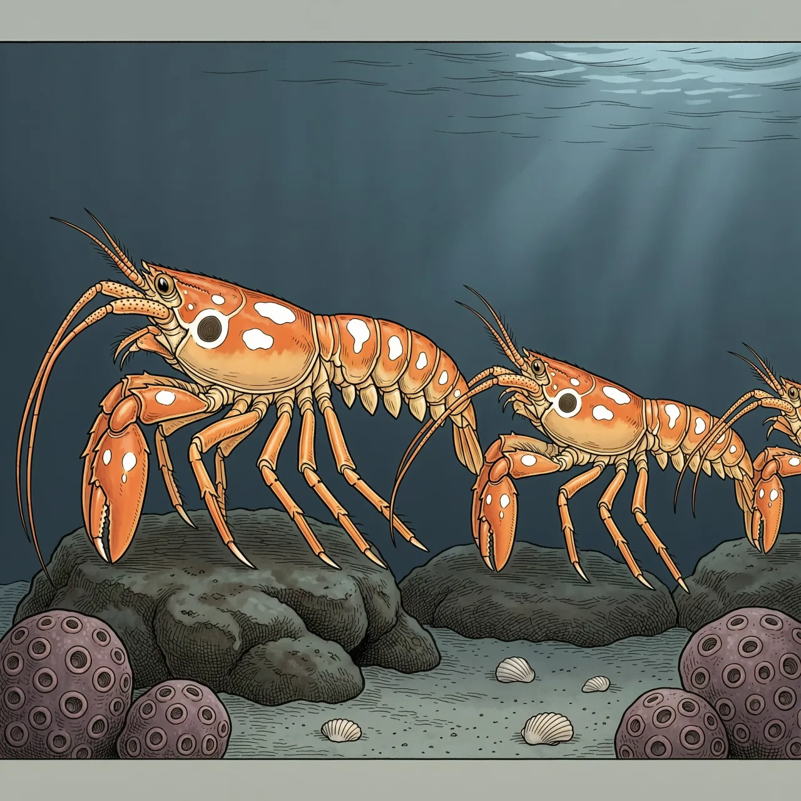
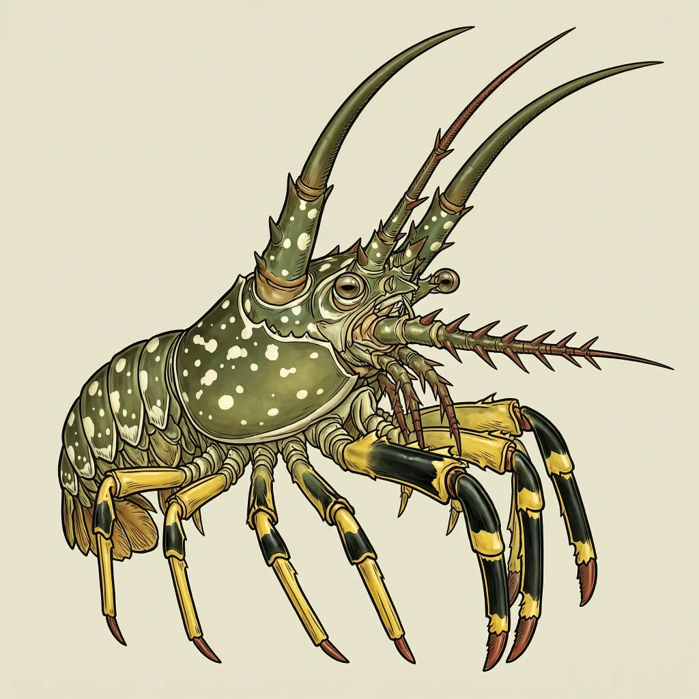

眼斑龙虾白天躲在西大西洋礁洞与红树根间，夜间活动。它没有大螯，眼柄后两条棘刺向前弯曲如角，第二对触角比身体还长。冬季数百只排成队列在海床上行进，行进的目的尚无定论；学名取自百眼巨神，可几乎所有龙虾都有类似的眼斑。
红树根底下、码头防撞垫旁边、海绵钻出的洞里，眼斑龙虾白天就伏在这些地方。它的家当横跨西大西洋：从巴西到北卡罗来纳州，下潜到90米水深，墨西哥湾、加勒比海、巴哈马和南美洲东部都有眼斑龙虾。不过湾里偏北的那批一般只住在33米以内，多半是季节性水温变化不好惹；佛罗里达半岛南部、整个巴哈马和加勒比海则住得浅。另有说法称西非近海也见过它们。
眼斑龙虾白天躲洞，夜里才出来，吃碎屑、植物，也吃碰上的动物和鱼类尸体。打它主意的有八爪鱼、铰口鲨、鳞魨、蠵龟、港海豹、宽吻海豚和魟，头一号是人类。可它并不总是独来独往：数量上百只时，个体离开洞穴，在海床上排成一列游行。这多半发生在冬天，估计和水温下降有关，游去的目的地至今没人说清；一种解释是，队列里它们靠排尿互相传递信号。
眼斑龙虾的学名Panulirus argus取自希腊神话里全知的百眼巨神阿耳戈斯。可眼柄后那对眼斑并不独一份，几乎所有龙虾都有类似的眼斑，这个名字实在名不副实。真正让它和餐桌上想象中那种龙虾不同的是：没有爪。眼柄后两条棘刺比其他龙虾的大得多，向前弯如同一对角，眼睛反而从角下向两侧伸出。第二对触角比身体还长，覆着向前的棘刺，底部较厚，有时缀着蓝；脚上是蓝黄相间的横纹，尾扇黄黑相间。
